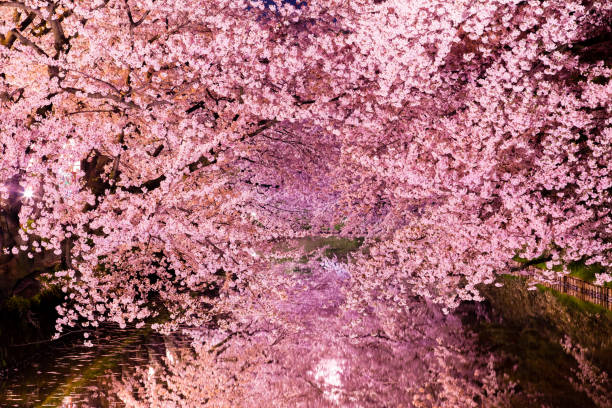
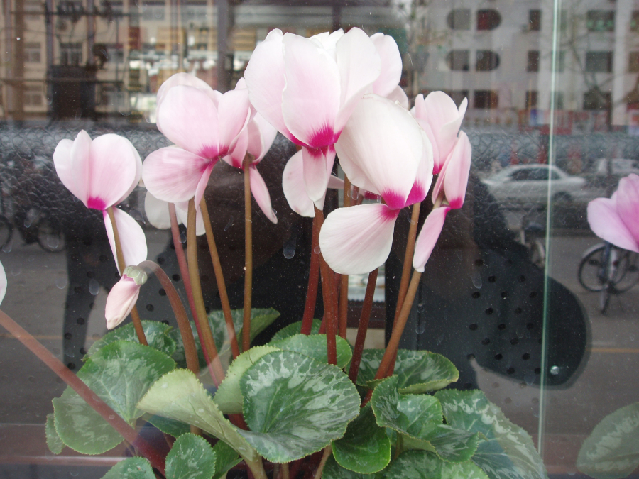

É muito comum associar as flores às estações mais quentes e coloridas, como a primavera. No entanto, nem todas gostam de temperaturas elevadas. Certas plantas precisam do frio para se desenvolverem completamente, chamadas flores de inverno. Você já reparou que alguns animais só vivem em regiões marcadas por baixas temperaturas? Isso também se aplica às plantas. Algumas delas só conseguem mostrar todo o potencial nas estações mais frias do ano, como o inverno. É importante saber quando e onde cultivá-las..
Engana-se quem pensa que as flores de inverno são desprovidas de beleza ou cores vibrantes. Algumas delas são muito utilizadas para a ornamentação de jardins e outros ambientes.Que tal conferir algumas flores de inverno? Sabendo quais são as principais características dessas espécies, fica muito mais fácil cultivá-las. Continue a leitura e conheça as principais plantas que adoram as estações mais frias do ano.
O cíclame é uma planta herbácea de pequeno porte, atingindo no máximo 20 cm de altura. Ele é cultivado, principalmente, em canteiros e jardins. As belas flores são muito bem-vindas na decoração de ambientes internos, cultivadas em casas ou escritórios.Ele deve ser mantido à luz indireta, na sombra. Esse fator é indispensável para a sobrevivência. O sol deve ser evitado das 11h às 17h. Por ser uma planta de inverno, o cíclame prefere climas amenos e frios. As regas não precisam ser tão frequentes, mas o solo nunca deve estar encharcado.
